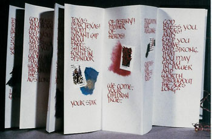
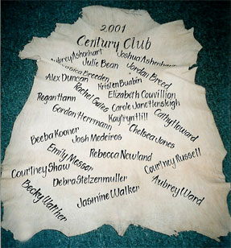
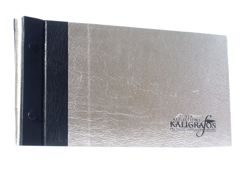
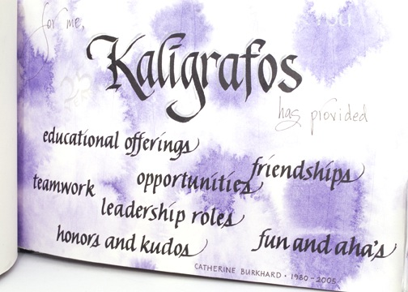

|  | A letterform based on an alphabet designed by Frederich Neugebauer became the alphabet used in this accordian-folded book, done in gouache. The verses of "Texas, Our Texas" were enhanced with collage and Texas commemorative postage stamps. The covers were done with navy blue leather with braided red-white-blue ties. |
|  | Hand-lettered names on a goat skin for a youth camp. |
|  | Memento book for 25th anniversary of "Kaligrafos, The Dallas Calligraphy Society- cover in silver and black leathers. |
|  | Catherine's page in the calligraphy group's memento book. |
 |
Home | Repair & Restoration | Custom Binding | Calligraphy | Bookbinding Courses | Reference | Contact Info
©2010. Books 'n Letters Studio. |